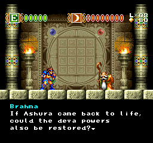

The game
Called 迦楼羅王 (カルラオウ karuraou) in Japan, published by Epic Sony Records, developed by Ukiyotei, released on February 18, 1994.
It was released the same year in English under the name Skyblazer in Europe and America.
While the original game story in inspired by Hindu mythology and Buddhist cosmology, the English release of Skyblazer completely removed any Hindu or Buddhist references.
This project is a retranslation of the Japanese game into English to keep as much of the original material as possible.
The patch applies to the USA rom (I used it because it already contains a latin font).
Screenshots
|  |
Patch
| ROM | English Patch |
|---|---|
| Skyblazer (USA) No-Intro: Super Nintendo Entertainment System (v. 20210222-050638) File/ROM SHA-1: 8426A16F7D8656C8D2CE4AC3151EC96B433F938D File/ROM CRC32: F13B00B0 |
Skyblazer (English).bps |
Story (translated from the manual)


Resurrection of a deva
In ancient times, there was a race of beings with mysterious powers, called the devas.
The legend of the devas
A long time ago, the world was composed of three realms… the heavenly realm ruled by the gods, the demon world ruled by the demons, and the earthly realm ruled by devas. The demons loved to fight and they had long been engaged in a war against the gods and the devas. The power of Ravana, king of the demons, was particularly strong, devastating both the heavenly and earthly realms and threatening to destroy the entire world if allowed to continue. In this crisis, the gods and the devas temporarily joined forces and sealed Ravana and the demons in a different dimensional space.
Thousands of years later, war broke out, this time between the gods and the devas. The devas were commanded by a group known as the Eight Legions, who fought evenly against the gods. The war lasted so long, exhausting the gods and the devas, that a truce was reached. However, Ashura, one of the Eight Legions, was opposed to the truce. Ashura was belligerent and his nature is to be continually engaged in war. He wanted to unleash the demons sealed in the other dimensional space and bring back war and chaos into the world. The devas, exhausted by the destructive war, imprisoned Ashura deep underground to thwart his ambitions. To do so, they had to give up their secret powers… In exchange for the power of the devas, the earthly realm was at peace.
The descendants of the devas eventually lost their powers and began to live as humans on earth, and with the passage of time, the existence of gods and devas became a legend. But unbeknownst to everyone, some inherited the power of the devas, albeit in a small way.
Ashura returns…
Ashura, imprisoned deep in the dark depths of the earth, received an evil thought sent from a dimensional rift. It came from Ravana, the king of the demons.
“O Ashura, god of war! My name is Ravana.”
“You are the kings of the demons that the devas have trapped in another dimension!” Ashura replied.
“Ravana… King of the demons…”
“I will soon be revived! With my army, let us bring back to earth the days of terror and war!”
“Wa…wa…r… War!”
“Yes. I cannot escape through this narrow rift. But I can manage to send my minions into your world!”
From the dimensional rift, a myriad of demons swarmed out and ate through the bonds that held Ashura down. Ashura sprang up and checked that his strength had not diminished.
“Ravana! In order to break the seal of the other dimension, I need someone who possesses the power of the devas as a sacrifice! I’ll find them, I promise, and I’ll look after your army until then!”
From the darkness, a huge evil silhouette jumped out toward the surface.
Karura sets off
The legendary deva Ashura appeared and went on a rampage with the monsters of the demon world. In order to save the earthly realm from the chaos, it was necessary to have a true deva who could match the power of Ashura. One by one, the descendants of the devas were captured by Ashura.
One day, a girl, Vishnu, was about to be taken as a sacrifice to Ravana. A young man rushed there - Karura. Although he is descendant of King Garuda, one of the Eight Legions, he has not yet awakened his true power. A blow from Ashura easily knocked Karura unconscious. The next thing he knows, Brahma, the mysterious old man who guards the shrine of the devas, is standing in front of him.
“O Karura, obtain the secret power and defeat Ashura!”
“Oh! I will!”
In order to awaken his true power as a deva, Karura set out on a journey of spiritual training together with old man Brahma.
Translation choices
Karura or Garuda
The game is called 迦楼羅王 (karuraou) King Karura in Japanese and the main character is called 迦楼羅 (karura). Some sources translate the name of the character as Garuda. Both can be correct depending on the context.
While translating, I went back and forth between the two for several reasons:
- Karura is the Japanese reading of the name as shown on the title screen and the manual
- In Japanese Buddhism, Karura (迦楼羅) and Garuda (ガルダ) are distinct deities even if the former is inspired by the latter
- The name Garuda already appears in the game as one of the shrines (ガルーダの祠)
- Ashura is also the Japanese reading for the asura group of beings of the Eight Legions
Eventually I kept the Japanese names Karura and Ashura.
Gods and Demons
Three terms come back often in the story (both in the manual and the game):
神 (かみ kami), 魔族 (まぞく mazoku) and 魔神 (まじん majin).
神 is gods and 魔族 is demons (Mazoku).
魔神 is harder to translate: devil, evil spirit, genie, evil god, demigod, demon god. (In the Diablo games, this is the term for Prime Evil).
In the context of the game, the term designates the beings like the Eight Legions, which are neither gods nor demons, but distinct groups of deities (like the devas), nature spirits (like the yakshas) or demigods (like the asuras).
I chose to translate it as Deva as an encompassing term even though the asuras are technically not devas.
(Deva in Hinduism, Deva in Buddhism)
I think it fits better and also removes the intrinsic negative connotation that genie or demon god would have.
It is also in line with the story in the manual that is a thinly veiled reference to the Devasura War, the eternal war between the devas and the asuras.
In the intro, Ashura is called 戦いの神 (god of war), the only time where he’s not referred to as 魔神 or 魔族.
References
Characters
| US name | Japanese name | Meaning |
|---|---|---|
| Sky | 迦楼羅 (かるら karura) | Karura |
| Sorceress Arianna |
ビシュヌ (bishunu) | Vishnu |
| Old Man | ブラフマ (burafuma) | Brahma |
| Ashura | アシュラ (ashura) | Ashura |
| Raglan | ラバーナ (rabana) | Ravana |
In Hinduism, Vishnu and Brahma form the trinity of supreme divinity with Shiva.
The name Ashura could come from one of the Eight Legions: asura (ashura in Japanese).
Ravana is a mythological demon-king, the main antagonist in the Hindu epic Ramayana.
Stages

In the Japanese game, the 7 shrines are named after the Eight Legions, a group of Buddhist deities. These names are absent in the US version.
| . | US name | Japanese name | Meaning |
|---|---|---|---|
| 1 | Shrine of the Wandering Soul | ナーガの祠 | Naga Shrine |
| 6 | Gateway to the Eastern Plain | ガンダルバの祠 | Gandharva Shrine |
| 7 | Shrine of Endless Journeys | キンナーラ | Kinnara Shrine |
| 9 | The Port of Vengeful Seas | ヤッカの祠 | Yaksha Shrine |
| 17 | Shrine of the Weeping Widow | ディーバの祠 | Deva Shrine |
| 20 | The Shrine of Final Hope | マゴラーガの祠 | Mahoraga Shrine |
| 21 | Shrine of Destiny | ガルーダの祠 | Garuda Shrine |
The eighth ones, asuras (ashura in Japanese), do not have a shrine. It’s probably where the name for the antagonist comes from.
Two stages are referencing Parna (パルナ) which could be a reference to Parnashavari (パルナシャバリー)
As far as I can tell, the stage names in the US version (Tarolisk, Petrolith, Kharyon, Kh’lar, Shirol, etc.) are completely made up and do not appear in the original version.
Powers
| US name | Japanese name | Meaning |
|---|---|---|
| Dragon Slash | 竜斬拳 (りゅうざんけん) | Dragonslayer Fist |
| Comet Flash | 飛虎砲（ひこほう） | Flying Tiger Cannon |
| Heal Power | 菩薩印（ぼさついん） | Bodhisattva Mudra |
| Starfire | 爆霊覇（ばくれいは） | Spiritual Outburst |
| Time Stop | 霧幻陣（むげんじん） | Illusion Mist |
| Lightning Strike | 雷神拳（らいじんけん） | Raijin Fist |
| Warrior Force | 金剛呪（こんごうじゅ） | Vajra Mantra |
| Fiery Phoenix | 天翔舞（てんしょうぶ） | Heavenly Flying Dance |
Blood
The wikipedia page mentions “Blood from the Japanese release was re-colored green for the Western releases.”
As far as I can tell, that is not the case. I haven’t seen any visual differences regarding blood (the source linked doesn’t even mention the Japanese version at all). If you find any, feel free to let me know.


Share this post: